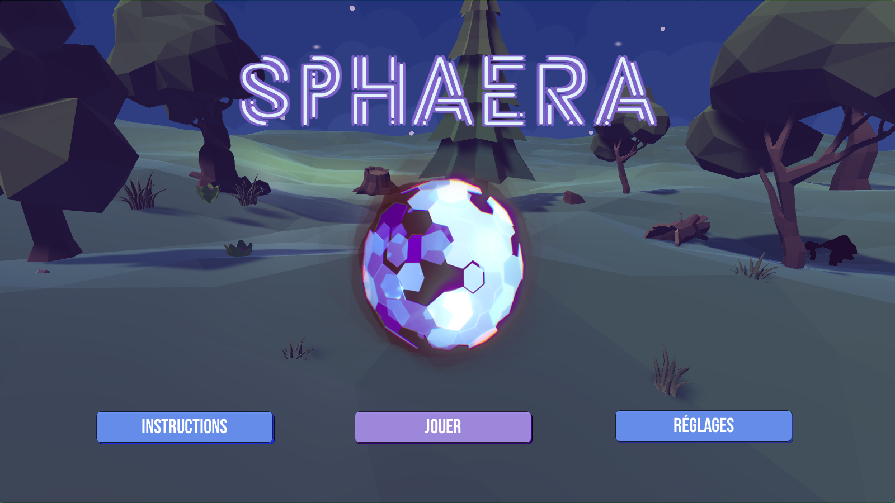
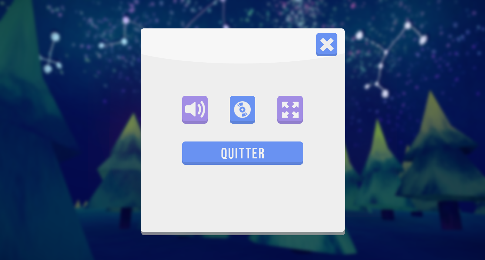
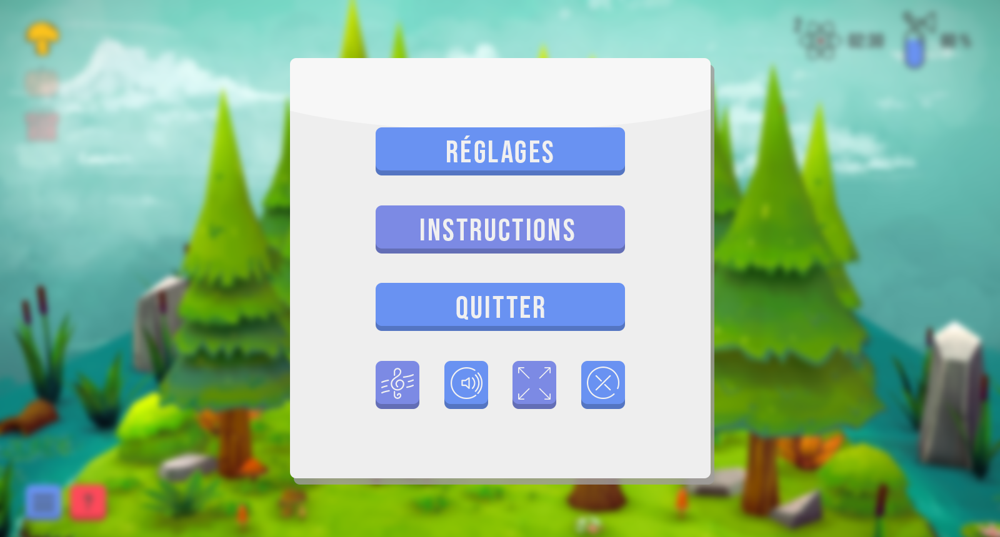
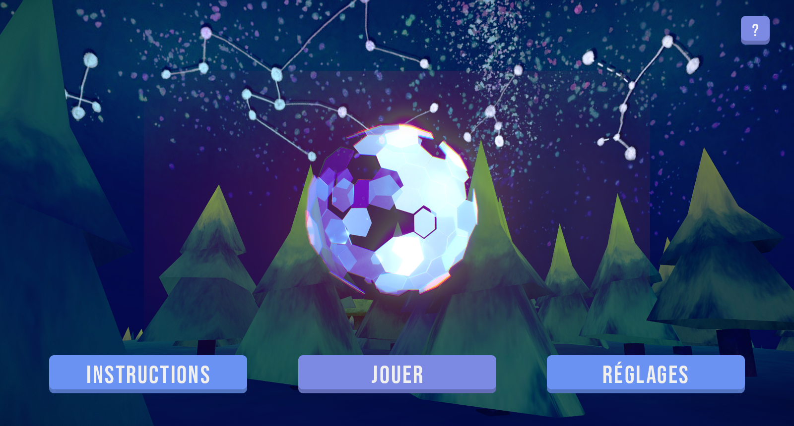
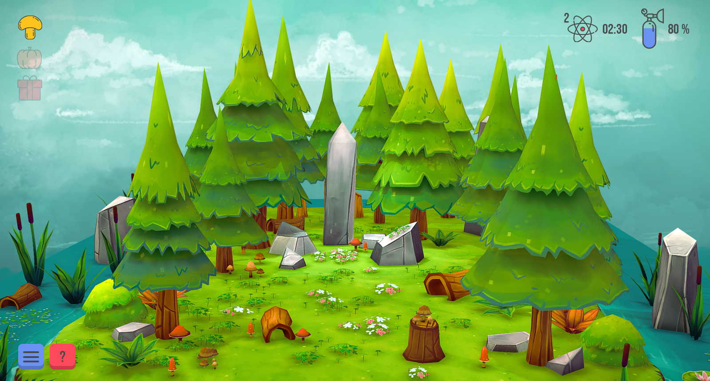
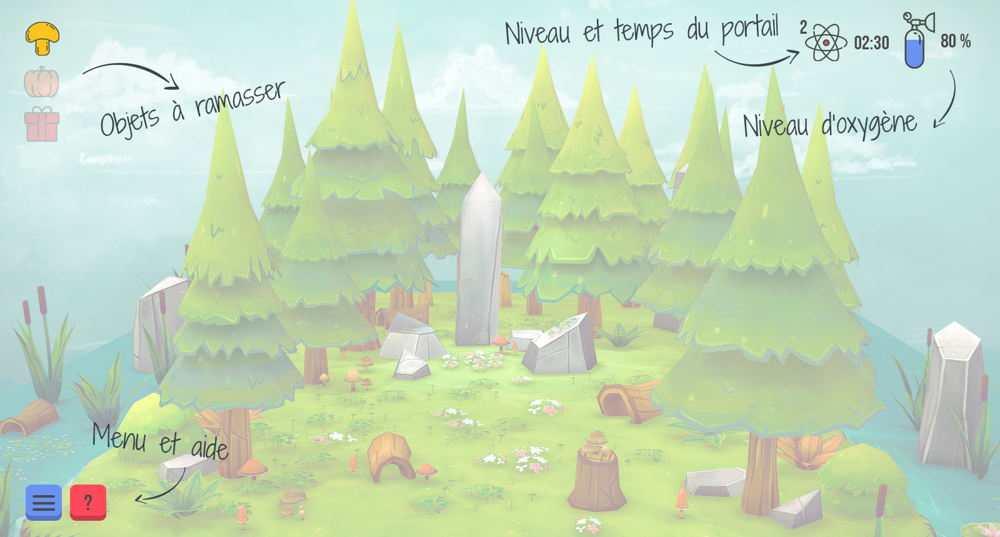

spHAeRA
Automne 2018
tiM-552 déVeloppeMent de jeu
Sphaera est un jeu d'aventures de type " cartoon / lowpoly " en 3D destiné aux jeunes entre 8 et 16 ans que mon équipe et moi avons développé dans le cadre de notre cours "Développement de jeu" du programme Techniques intégration multimédia au collège de Maisonneuve.
- 


synopsis
Sur une terre inhabitée par les humains depuis quelques années, les animaux ont tranquillement repris le contrôle de leur habitat naturel. Un jour, alors qu'il se promène à bord de son vaisseau, l'astronaute rencontre quelques problèmes techniques. Il doit s'éjecter d'urgence de son vaisseau avant qu'il ne s'écrase sur la planète Terre.
Sa mission sera donc de retrouver son vaisseau ainsi que les pièces manquantes pour pouvoir décoller et quitter cette terre rendue inhabitable. Pour ce faire, il devra traverser trois saisons pour récolter trois objets appartenant à celles-ci : Un champignon (été), une citrouille (automne) et un cadeau (hiver). Il devra également s'assurer de ne pas manquer d'oxygène et de retrouver quelques morceaux de son vaisseau dont il aura besoin.
Il comprend rapidement qu'il n'est pas seul et qu'il n'est pas en sécurité sans son arme. Également, la température n'est plus ce qu'elle était sur la planète. Il découvre des portails qui mènent aux autres saisons aléatoirement, ce qui rend la tâche plus complexe. S'il réussit à passer à travers les saisons et s'il récupère tous les objets nécessaires, il découvrira le portail qui le mènera à son vaisseau et enfin il pourra repartir d'où il vient.
Mon Rôle dAns le pRojet
designer ui / ux
Au niveau de la représentation graphique du projet, j'ai été mise en charge de la conception des maquettes Photoshop concernant la majorité des fonctions interactives du jeu, notamment ; l'écran d'introduction ( SplashScreen ), les menus, le panneau d'instructions, le panneau d'informations et le panneau de contrôle.
À travers les maquettes originales ci-dessous, on remarque que certains changements ont été effectués lors de la conception finale du jeu par exemple, la barre d’énergie (barre bleue) s'est simplifié et j'ai ajouté une barre de vie (barre rouge).
- 
- 
- 
- 
- 